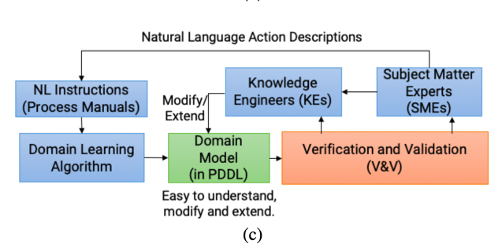
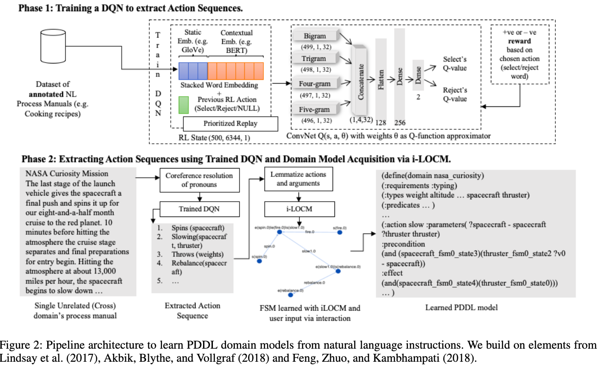
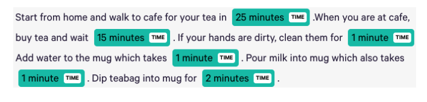
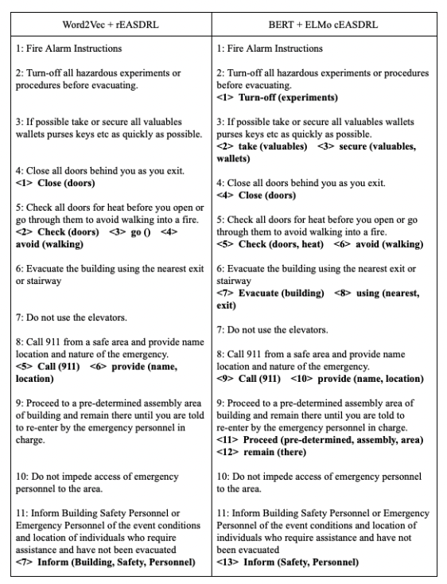
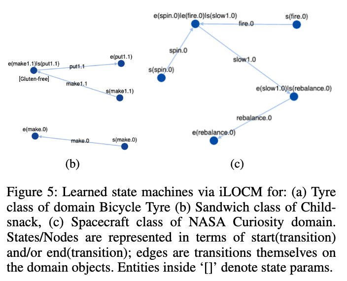
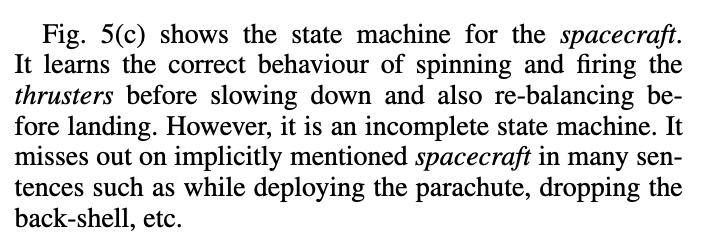

[TOC]
- Title: NLtoPDDL: One-Shot Learning of PDDL Models from Natural Language Process Manuals
- Author: Shivam Miglani et. al.
- Publish Year: 2020
- Review Date: Mar 2022
Summary of paper
Motivation
pipeline

Pipeline architecture

Phase 1 we have a DQN that learns to extract words that represent action name, action arguments, and the sequence of actions present in annotated NL process manuals. (why only action name, do we need to extract other information???) Again, why this is called DQN RL? is it just normal supervised learning… (Check EASDRL paper to understand Phase 1)
Phase 2 we extract the action sequences by feeding the unseen process manual to Phase 1’s trained DQN. From this extracted sequences,
- LOCM2 algorithm learns a partial PDDL model in one shot
- the model can be completed with human input in an interactive fashion
- they named it as interactive-LOCM (iLOCM)
EASDRL How it works
It represents action sequences extract as a RL problem and uses two DQNs. Each DQN can perform only RL actions: select or reject a word.
the first DQN only select action words but the second DQN will based on the action words to select arguments words
some pre-processing methods
the author replaced pronouns with nouns in the unseen process manual to reduce ambiguity using a neural based technique using Huggingface library (neuralcoref https://github.com/huggingface/neuralcoref)
Some key terms
LOCM2 what it is
this method tried to cluster similar looking actions and arguments under one template, resulting in higher PDDL models with precise action sets
some limitations for the proposed model
Since the DQNs were trained to extract single words, the learned model extracts multiple words for the same argument and also misses out on implicit arguments.
- e.g., The learned model for
teadomain assigned correct duration to the actions but missed out preconditions and effects related to “mug” argument and static “hand” argument.
Also extracting words with adjectives such as “cold milk” or compound nouns such as “training personnel” would be better (??!!! word association!)
Minor comments
Flair library for word embeddings might be useful
https://github.com/flairNLP/flair
Annotated dataset
For the training of the DRL models, the pre-annotated datasets are taken from Feng, Zhuo, and Kambhampati’s repository1for three real-world domains
- Microsoft Windows Help and Support (WinHelp) documents
- CookingTutorial (Cooking)
- WikiHow Home and Garden (WikiHG)
Some examples for Phase 1 action extraction

Learned state machine via iLOCM


Potential future work
I see, there is no special method to find arguments or adjectives
let’s see if we can use some word association technique to do that so as to enhance the better argument score.